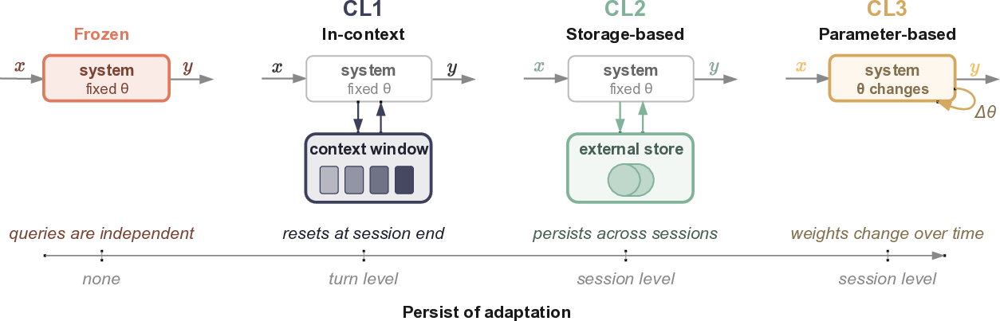
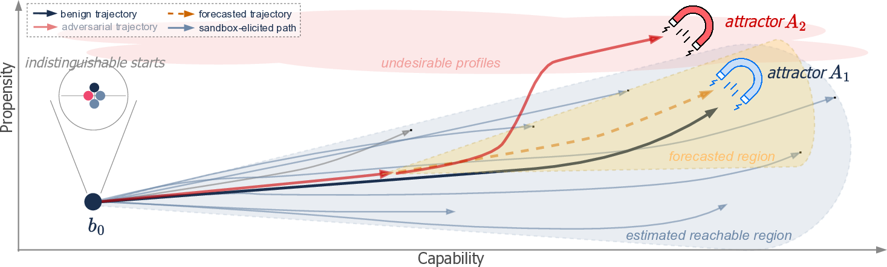

Continual Learning Requires Evaluating Trajectories
1 University of Cambridge ·
2 University of Oxford ·
3 Universitat politècnica de valència ·
4 MIT
5 Future of Life Institute ·
6 Stanford University
Abstract
AI systems increasingly incorporate continual learning mechanisms allowing their behaviour to adapt after deployment, from (1) in-context learning and (2) memory features already in wide use to (3) post-deployment weight modification under research. We argue that, by treating AI systems as frozen artefacts whose performance and safety are assessed at release, current evaluation practices structurally ignore the behavioural trajectory of a system that continues to learn from experience. Our position is that evaluation of continual learning systems should be centred on behavioural trajectories, with the complementary goals of characterising the landscape of possible behaviours and forecasting how behaviour will evolve from a given set of experiences. This can be operationalised through trajectory elicitation sandboxes and predictive monitors that forecast behavioural evolution, but may face fundamental obstacles analogous to those seen in dynamical systems. These are best addressed by (1) applying trajectory-centred evaluation to today's continual learning systems and (2) relying on the resulting evidence to design systems amenable to it, yielding a virtuous cycle in which systems and their evaluations co-evolve.
Figure 1: A continual learning AI system can be described by a behavioural profile encompassing capabilities and propensities. (a) The profile b0 describing the system at release time evolves over turns t (within context) and sessions s (across context) generating a trajectory bs,t (shown in a simplified bi-dimensional space). (b) Current AI evaluation relies on benchmarking and red-teaming the released system and is therefore inadequate to observe realised trajectories for systems that learn after deployment. (c) Our vision of evaluation for continual learning combines pre-deployment sandbox elicitation of trajectories, to characterise the landscape of behavioural space the system can reach, and post-deployment forecasting of future trajectories, to predict development of undesirable profiles.
Paper Overview
Frontier AI systems are typically described as trained before deployment, released with frozen parameters, and carrying no information across interactions. This temporal and user invariance is eroding through context windows, memory features, external stores, and emerging mechanisms for post-deployment parameter updates. To address these forms of continual learning (CL), we argue that evaluation must shift.
We distinguish three levels of CL by the object through which adaptation emerges: in-context (CL1
In-Context Continual Learning: The system progressively accumulates information over turns within a single session, but does not persist beyond the session.
Examples:
• Multi-turn chat (e.g., ChatGPT)
• Agent frameworks like ReAct (Yao et al., 2022)
), storage-based
(CL2
Storage-based Continual Learning: The system has an external store where it can write information and access it in later turns or sessions.
Examples:
• Multi-session memory (Chen et al., 2026)
• Agent skills (Anthropic, 2024)
• Retrieval Augmented Generation (Lewis et al., 2020)
• Agentic context editing (Zhang et al., 2025)
), and parameter-based (CL3
Parameter-based Continual Learning: System parameters are modified post-deployment in response to experiences, persisting across turns and sessions.
Examples:
• Weight modification (Eyuboglu et al., 2025; Golovneva et al., 2025; Behrouz et al., 2025)
• Test-time training (Gandelsman et al., 2022)
• Architecture modification (Zhang et al., 2026)
). We then formalise CL systems through an internal state and a behavioural profile (a vector of capabilities and propensities describing the system's behaviour),
leading to the notion of a behavioural trajectory that evolves with experience.

Figure 2: AI systems map input x to output y. Frozen systems embed no adaptation across turns or sessions, so that the output distribution is invariant over time and users. CL1 allows information across turns to accumulate within a session without preservation across sessions. CL2 adds an external store that persists across turns and sessions while weights stay fixed, and CL3 allows the system parameters themselves to change. The different levels can be combined in different ways.
Continual learning can cause undesirable propensity and capability changes—such as guardrail degradation Guardrail Degradation: Alignment and safety properties erode over time as the system learns from deployment experiences. , propensity cross-contamination Propensity Cross-Contamination: Changes in one specific propensity inadvertently affect another, seemingly unrelated one. , unbalanced specialisation Unbalanced Specialisation: The system becomes proficient in a specific domain at the expense of others (also known as "catastrophic forgetting"). , cross-domain transfer Cross-Domain Transfer: Improvement in one capability boosts seemingly unrelated capabilities in unexpected ways. , or capability degradation Capability Degradation: Capabilities erode after a large number of turns or sessions. over turns and sessions—arising from benign-use divergence or adversarial manipulation. Current pre-deployment evaluation assumes systems do not change after deployment, and deployment-time monitors (e.g., output filters, chain-of-thought monitors) are calibrated on the released checkpoint. This makes the prevailing paradigm structurally inadequate for CL.

Figure 3: (a) Example failure modes of CL: propensity changes include guardrail degradation and cross-contamination, where altering one propensity inadvertently affects another. Capability changes include specialisation in one capability at the expense of others, cross-domain transfer of capability gains, or degradation of capability over turns or sessions. (b) Undesirable capability and propensity changes can occur through unintended divergence from benign use or adversarial manipulation of experiences, both potentially leading to undesirable behavioural profiles.
We argue that evaluation of CL systems should be centred on behavioural trajectories, with two complementary goals: landscape characterisation maps the behavioural profiles a system can reach and the probability it does so under various conditions, while trajectory forecasting predicts how the trajectory of a deployed instance will progress from its current state. These goals can be operationalised through trajectory elicitation sandboxes that subject systems to prolonged controlled interactions, and predictive monitors that forecast future behavioural profiles with calibrated uncertainty.
Two fundamental obstacles, drawn from the study of dynamical systems, may hinder trajectory-centred evaluation. Chaotic sensitivity Sensitivity to States and Inputs: Small differences in the system's state or inputs produce exponentially diverging differences in the resulting behavioural profile through "sensitive dependence on initial conditions." Beyond a characteristic time horizon, prediction becomes intractable even with perfect knowledge of the update rule. This is analogous to weather forecasting where long-range prediction fails due to exponential sensitivity to unmeasurable details. CL systems may exhibit this through high-dimensional non-linear token-mixing (CL1), memory operations (CL2), or chaotic loss landscapes (CL3). to states and inputs can prevent predictive monitors from generalising beyond elicited trajectories. Multiplicity of attractors Multiplicity of Attractors: The system may have multiple attractors—regions of state space toward which trajectories converge based on their starting basin. Trajectories starting in one basin never enter another basin's attractor. Like Hopfield networks with stored patterns, a single trajectory or collection of trajectories from one basin reveals nothing about other basins. In CL systems, this can arise from local minima in loss landscapes (CL3), self-reinforcing retrieval biases (CL2), or locked behavioural regimes in long contexts (CL1). means elicited trajectories may cover only a subset of reachable basins, and deployed systems may converge to attractors that the sandbox failed to surface. There is an asymmetric epistemic burden: one demonstration is sufficient to show the presence of one of these obstacles, but showing absence is much more difficult. The two obstacles are logically independent: a system may display either, both, or neither. Moreover, the adversarial scenario worses both concerns.

Figure 4: Fundamental obstacles may hinder trajectory-centred evaluation. Chaotic sensitivity to states and initial conditions may prevent predictive monitors from generalising from elicited trajectories, while multiplicity of attractors may cause elicited trajectories to represent only a subset of the possible behavioural profiles and deployed systems to converge to attractors that are hard to identify.
The prevalence and severity of these obstacles for a given system are empirical questions. We recommend two complementary lines of action. Evaluators should start trajectory-centred evaluation on today's systems, extending current CL1 and CL2 benchmarks into full sandbox-and-monitor suites that yield evidence on where chaos and multi-attractor regimes actually arise. Based on these findings, developers should design CL mechanisms amenable to evaluation, through directions such as contractive update rules, choice of intrinsic objectives (e.g., curiosity or novelty), gated adaptation, and circuit-breakers that pause or roll back learning.
We engage with several alternative positions:
-
There is no way to design general-purpose CL systems which avoid chaoticity and multiplicity of attractors.While possible, this is hard to say without empirical evidence. The evidence we would gather by starting trajectory-centred evaluation now and by attempting to design systems amenable to evaluation (which we advocate) is necessary to confirm or dispute this alternative position.
-
It is already impossible to extensively test LLM agents pre-deployment, as novel architectures can be developed by users.It is true that advances are needed to characterise the behavioural profiles possible with different agent architectures for a given underlying LLM. Moreover, LLM agents show CL1 and could include CL2 or CL3. Thus, trajectory-centred evaluation is part of the practice needed to characterise behaviour of agents for a given LLM and this position is compatible with our own.
-
Existing monitoring tools (e.g., output filters) are sufficient for CL systems.Such monitors will still play a role to exclude, e.g., clearly harmful outputs. However, CL systems may develop new capabilities and propensities that output filters will miss or detect when it is already too late.
-
Landscape characterisation is not different from the goal of current evaluation practices, that include pre-deployment fine-tuning, red-teaming and elicitation to characterise possible behaviours.While the aim is analogous, current evaluation practices ignore specific (future) deployment information for more refined trajectory-based anticipation of benign and harmful uses.
-
We should rely on evaluation practices from traditional online learning.Traditional online learning focuses on a system sequentially learning well-defined tasks. There, we can subject the system to comprehensive tests after each learning step. This is impossible for CL systems that are general-purpose and learn individually for each user, which expands the number of tasks and instances to test.
Trajectory-centred evaluation—coupling pre-deployment trajectory elicitation with post-deployment predictive monitors—offers a tractable alternative to the infeasible goal of re-evaluating CL systems after every adaptation step. It is most effective when layered with complementary defences such as input/output filters, transparency embedded in the evolution mechanisms, and broad indicators of deployed-system behaviour analogous to pharmacovigilance. Together, these constitute a defence-in-depth strategy for CL systems.
Citation
@article{pacchiardi2026continual,
title={Continual Learning Requires Evaluating Trajectories},
author={Pacchiardi, Lorenzo and Paskov, Patricia and {\'O} h{\'E}igeartaigh, Se{\'a}n and Mart{\'i}nez-Plumed, Fernando and Collins, Katherine M. and Barez, Fazl and Prunty, Jonathan and Mecattaf, Matteo Gabriel and Fountas, Zafeirios and Uuk, Risto and Koyejo, Sanmi and Ududec, Cozmin and Hern{\'a}ndez-Orallo, Jos{\'e}},
month=may,
year={2026},
doi = {10.5281/zenodo.20344324},
url={https://cl-eval.github.io/}
}